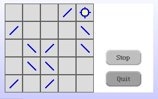
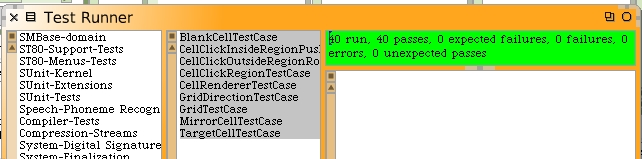
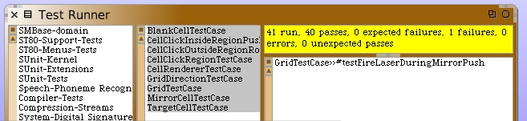
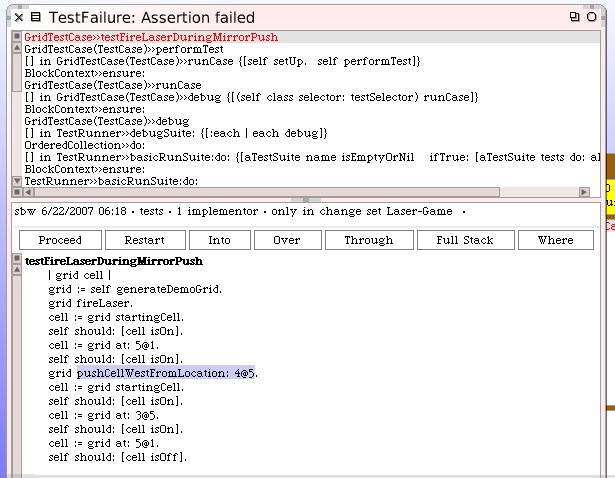
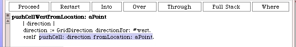
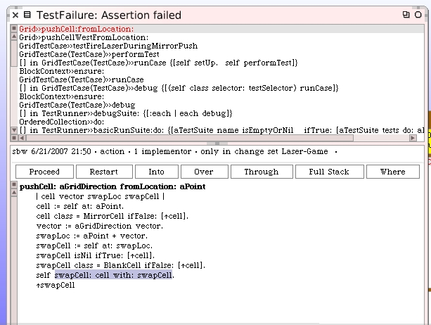
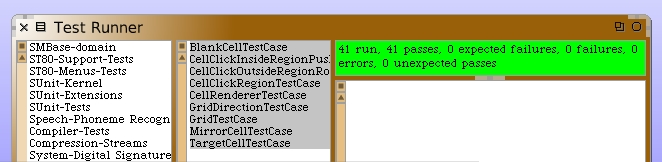
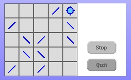

Visual Bug With Push
You may have noticed there's a bug with the visual presentation when pushing cells while the laser beam is active. We still may want to go back and change the overall idea so that this isn't possible, at a later time in our development. However, I want to go back and fix this bug right now. It's a lot like what we saw with cell rotation while the beam was active.
Here's the situation that can show the bug.
Immediately after opening the LaserGame morph, I turned on the laser beam. I then clicked on the mirror cell at location 4@5 and pushed it West to location 3@5 as shown in the picture above. You can see that the target cell is lit but shouldn't be.
We should create a unit test to see if this a bug with the model code. Close the LaserGame morph. We'll get back to it once we have this fixed.
In the GridTestCase we didn't create any tests for pushing where we checked the laser too. We should write 2 new test methods. One to test the grid by firing the laser after the cell is moved and another to test the grid while a cell is moved.
testFireLaserAfterMirrorPush
| grid cell |
grid := self generateDemoGrid.
cell := grid startingCell.
self should: [cell isOff].
cell := grid at: 5@1.
self should: [cell isOff].
grid pushCellWestFromLocation: 4@5.
grid fireLaser.
cell := grid startingCell.
self should: [cell isOn].
cell := grid at: 3@5.
self should: [cell isOn].
cell := grid at: 5@1.
self should: [cell isOff].
This test passes.
Now we write the unit test that repeats what we did live on the LaserGame morph.
testFireLaserDuringMirrorPush
| grid cell |
grid := self generateDemoGrid.
grid fireLaser.
cell := grid startingCell.
self should: [cell isOn].
cell := grid at: 5@1.
self should: [cell isOn].
grid pushCellWestFromLocation: 4@5.
cell := grid startingCell.
self should: [cell isOn].
cell := grid at: 3@5.
self should: [cell isOn].
cell := grid at: 5@1.
self should: [cell isOff].
Run the tests again. Sure enough it fails. This is good news. Again, we have constructed a unit test that reproduces a bug.
Open up the debugger for the failing test. Restart the method in the debugger. We will single-step through the unit test until we get to the push code.
Step "Into" this method.
When we get to this point...
You can see that we should probably be doing something about updating the laser beam path. Just like we did with the rotation activity.
Close the debugger. Here's the new version of the push code on the Grid class that should solve our problem.
pushCell: aGridDirection fromLocation: aPoint
| cell vector swapLoc swapCell |
cell := self at: aPoint.
cell class = MirrorCell ifFalse: [^cell].
vector := aGridDirection vector.
swapLoc := aPoint + vector.
swapCell := self at: swapLoc.
swapCell isNil ifTrue: [^cell].
swapCell class = BlankCell ifFalse: [^cell].
self clearCellsInPath.
self swapCell: cell with: swapCell.
self laserIsActive ifTrue: [self activateCellsInPath].
^swapCell
Rerun the unit tests. Everything works now.
We can relaunch the LaserGame morph and see if the problem is resolved for the visual world too.
It works.
This is another good breaking point and a place to save your image.